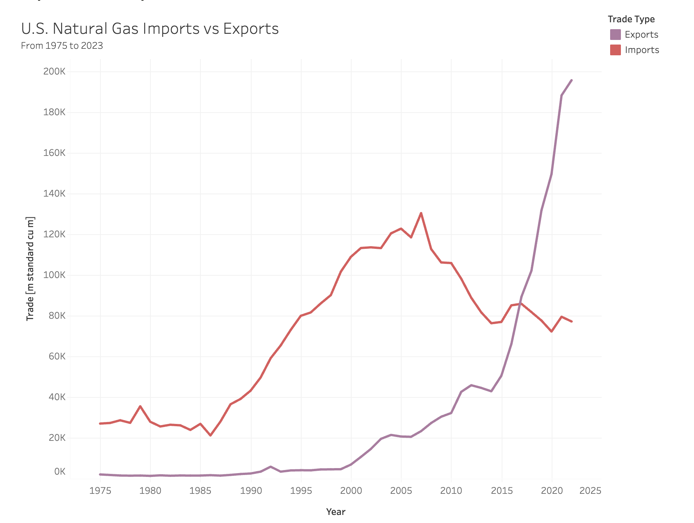

Conclusions
Revisiting the Big Picture

This project explored various aspects of the natural gas industry in the United States, utilizing multiple datasets and employing a combination of univariate, multivariate, and financial time series models, alongside cutting-edge deep learning approaches. My initial efforts focused on data visualization and exploratory data analysis to discern patterns and trends within the market. Through univariate analysis, I gained a broader understanding of time series analysis related to natural gas prices, consumption, production, imports, exports, CO2 emissions, and CVX stock movements. This served as a foundational step before advancing to more complex multivariate and financial time series analyses. Building on this foundation with a thorough review of existing literature, I developed sophisticated multivariate time series models. These models were instrumental in examining the effects of GDP and unemployment on natural gas prices, the influences of natural gas production, storage, and temperature on consumption, and the impacts of production and consumption on CO2 emissions. I also explored how domestic consumption, exchange rates, and the GDP of importing countries affect U.S. natural gas exports and investigated the interdependencies among production, import, and natural gas prices. Furthermore, I analyzed and forecasted the stock prices of leading natural gas production companies using financial time series models to assess their responsiveness to changes in the U.S. economy. This comprehensive analysis not only reinforced the understanding of the natural gas sector’s complexities but also underscored the efficacy of time-series modeling in predicting its economic implications.
To better understand the nuances of the natural gas sector, let’s examine detailed conclusions across its various dimensions:
Economic Impact
Henry Hub prices are a critical benchmark for natural gas pricing across the United States, influencing everything from individual utility bills to the economics of major industries. These prices not only reflect current supply and demand conditions but also set expectations for future changes in the market.
In 2008, Henry Hub natural gas prices spiked as seen from the above plot due to factors like financial market disruptions, showcasing their sensitivity to economic conditions and market changes.
Generally, economic growth often leads to increased energy demand, pushing up natural gas prices as industrial and consumer demand grows. Conversely, during economic downturns, demand decreases, resulting in lower prices. Unemployment impacts natural gas prices more indirectly, with higher unemployment leading to reduced economic activity and energy demand, thus affecting prices.
In this analysis, I explored the influence of GDP and unemployment on natural gas prices using several predictive models whose forecast are shown below.
The ARIMA Model, focusing on historical price data, predicted significant price fluctuations, indicating the volatility of natural gas prices and their susceptibility to a variety of influences beyond economic indicators alone. The SARIMA Model added seasonal trends to the analysis, shedding light on seasonal price variations crucial for planning in energy sectors. Meanwhile, the ARIMAX Model integrated GDP and unemployment data, providing a comprehensive view of how broader economic conditions correlate with natural gas prices.
The results clearly demonstrate while prices are inherently volatile, they respond predictably to changes in GDP growth and unemployment rates. The forecasts suggest a slight upward trend in natural gas prices from 2020, with increased variability towards 2025, indicative of a strengthening US economy characterized by GDP growth and decreasing unemployment. This trend towards stabilization in prices suggests fewer drastic fluctuations in the coming years, highlighting how economic recovery directly impacts energy demand and prices. Such insights are invaluable for energy companies, policymakers, and consumers in making informed decisions about energy use, pricing strategies, and policy formulation.
Demand/Supply Dynamics
Demand Dynamics
The analysis of natural gas consumption demonstrates a direct relationship with production levels as seen from the plot below.
It also shows a strong sensitivity to seasonal temperature variations. For instance, consumption spikes during winter months due to increased heating needs, and dips in summer when demand wanes as shown by the plot below.
Storage also plays a critical role in balancing supply, especially during unexpected surges in demand such as those experienced during the 2013-2014 Polar Vortex due to extremely cold temperatures across much of North America. This led to a spike in natural gas demand for heating as a result the storage levels were significantly drawn down. As shown in the plot below.
For this analysis, I explored the influence of production, temperature and storage on natural gas consumption using several predictive models.
The ARIMA model analyzed historical consumption data, revealing intrinsic patterns and market cycles. The SARIMA model added seasonal trends, enhancing understanding of periodic demand fluctuations crucial for energy sector planning. The SARIMAX model, incorporating production, temperature, and storage, also our best performing model whose forecast is shown in the plot above provided a comprehensive view, predicting how these factors influence consumption. The forecast suggests that natural gas consumption is expected to follow a similar pattern as observed in the past, with some periods of high usage which typically align with winter season. The forecast also indicates a potential increase in consumption beyond our last recorded data, suggesting that the demand for natural gas might grow. Such insights are essential for ensuring adequate supply, avoiding shortages, and stabilizing prices, aiding stakeholders in strategic planning and policy formulation.
Supply Side Dynamics
In this analysis, I looked at intricate relationships between U.S. natural gas imports, production, and prices using a VAR model.
 The model and the plot above helps to see how changes in one variable can influence the others due to their interconnected nature. It shows that the amount of natural gas being imported is starting to level off, which suggests the market is reaching a steady state which might indicate sufficient domestic production or a shift in energy policy affecting import dependence. Although prices are expected to remain stable for now, there’s a chance they might decline due to factors like market demand or political changes. We see that production is likely to decrease, which could be due to a variety of factors such as regulatory changes or natural resource limitations. In light of the analysis that natural gas imports are stabilizing and production is likely to decrease, stakeholders in the natural gas industry should focus on enhancing risk management, investing in innovative extraction technologies, optimizing supply chains, and engaging in policy advocacy. Additionally, continuous market analysis and a strong commitment to sustainability will be crucial. These strategies will help the industry navigate potential price declines and production challenges, ensuring stability and profitability amidst changing market dynamics and regulatory environments.
The model and the plot above helps to see how changes in one variable can influence the others due to their interconnected nature. It shows that the amount of natural gas being imported is starting to level off, which suggests the market is reaching a steady state which might indicate sufficient domestic production or a shift in energy policy affecting import dependence. Although prices are expected to remain stable for now, there’s a chance they might decline due to factors like market demand or political changes. We see that production is likely to decrease, which could be due to a variety of factors such as regulatory changes or natural resource limitations. In light of the analysis that natural gas imports are stabilizing and production is likely to decrease, stakeholders in the natural gas industry should focus on enhancing risk management, investing in innovative extraction technologies, optimizing supply chains, and engaging in policy advocacy. Additionally, continuous market analysis and a strong commitment to sustainability will be crucial. These strategies will help the industry navigate potential price declines and production challenges, ensuring stability and profitability amidst changing market dynamics and regulatory environments.
Environmental Impact
As natural gas usage and production have increased, so have the emissions, highlighting the need for strategic plan energy. This analysis highlights the direct impact of natural gas consumption and production on CO2 emissions within the energy sector.
Using the ARIMA model, which relies on historical data, we observed inherent emission patterns, while the ARIMAX model provided a more nuanced forecast by integrating production and consumption data, the forecast is shown in the plot above. The forecast in the above plot shows that increase in production and consumption correlates with higher emissions, underscoring the environmental cost of natural gas usage. However, discrepancies in forecast intensities between the model may arise from their different sensitivities to external factors and inherent data noise. Overall, this analysis underscores the importance of improving natural gas efficiency and adopting cleaner technologies like carbon capture and advanced combustion to mitigate the sector’s environmental impact.
Market Performance
The analysis of stocks of top natural gas producing companies namely Chevron Corporation and British Petroleum as seen from the plot above, it’s evident that stock market volatility in major oil/gas companies is heavily influenced by global events and crises. It’s evident that the movements in stock prices for these companies are not random but closely tied to significant global events. For instance, the Great Recession and the COVID-19 pandemic caused noticeable spikes in volatility, indicating that these companies are sensitive to economic downturns and global crises. Moreover, events specifically impacting the oil and energy sectors, like the 2010 Deepwater Horizon oil spill, can also lead to significant increases in stock volatility. This shows that sector-specific crises can be just as impactful as broader economic crises. Furthermore, investors should be aware that stocks in the oil and energy sector can be prone to sudden and sharp fluctuations in response to global and industry-specific events. This could affect investment decisions, especially for those seeking more stable investments. Lastly, companies and investors alike should focus on risk management strategies to prepare for and mitigate the effects of these high-volatility periods. This could involve diversifying investments, setting aside reserves for crisis periods, or hedging against potential losses.
Trade Dynamics

Finally, I analyzed export dynamics, as seen from the significant increase in U.S. natural gas exports shown in the plot above especially from 2014 given imports continue to decline. Analysing exports dynamics became crutical because it highlighted the growing relevance of exports in shaping the country’s energy strategy and market dynamics in the natural gas industry.
I examined factors such as U.S. consumption levels, exchange rate fluctuations, and the economic health of key import countries like the Netherlands, and gained crucial insights into how to strategically balance local demand with global market opportunities. Note: I focused on the Netherlands due to it being significant role in importing the U.S. natural gas. Source: eia
The ARIMA model, focused only on historical export data, identified general trends in exports. The SARIMA model extended this analysis by incorporating seasonal variations, highlighting how exports fluctuate throughout the year, which is critical for timely market strategies. The ARIMAX model, which integrated domestic consumption, exchange rates, and economic indicators from the Netherlands, provided a comprehensive forecast, showing how these variables interplay to shape export dynamics as shown from the lots above. It predicts that U.S. natural gas exports are likely to increase, influenced by domestic consumption patterns, international economic conditions, and currency valuation changes suggesting a strengthening U.S. dollar as natural gas exports rise, potentially benefiting sectors like manufacturing and energy in importing countries by providing a cheaper or more reliable energy source. For the U.S., increased exports might raise domestic natural gas prices unless production adequately covers both domestic and international demands. This scenario underscores the importance of strategic planning to balance local consumption with export opportunities, optimizing national and international economic benefits while maintaining stable supply and pricing. These insights are crucial for stakeholders to make informed decisions that align with both national interests and global market dynamics.
Final Remark
This detailed analysis showed how changes in the economy, environmental issues, and market trends affected the U.S. natural gas industry and significantly impacted the U.S. economy. By using data and forecasts effectively, industry leaders can make smart choices that meet both U.S. needs and global market demands. In simple terms, this strategy helps the economy grow sustainably while keeping the energy sector strong and ready to handle future challenges and opportunities.